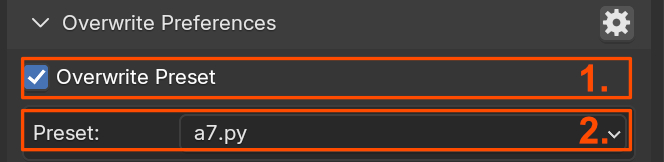
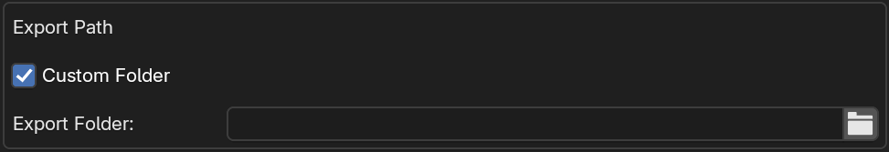

Creating Exporter Presets
Overwrite Preferences
Overwrite Preset
The settings are assigned in the preferences. THe Overwrite Preferences area is intended to temporarily overwrite these settings.

- Overwrite Preset: Enable Preference overwrite
- Preset Selection: Select the preset for the current export format
Overwrite Filepath

- Overwrite Filepath.
- Custom Folder.
- Export Folder.
- Search and Replace.
Overwrite Collection

- Color: Choose the Export Collection color.
- File Name: Use the filename as prefix.
- Prefix: Use a custom prefix.
- Suffix: Use a custom suffix.
- Export Path: Assign filepath on creation.
- Export Preset: Assign preset on creation.
- Collection Offset: Assign collection offset.
Create Export Collection
- Parent Collection.
- Create Export Collection.
- Add Exporter to Collection.
Popup Panel
The Popup Panel offers quick access to the Export List and key operations. Assign it to a hotkey or add it to the Quick Favorites menu for convenience.
Export Path
By default, the export path is based on the .blend file's location, with options for mirroring folder structures. Use the Search/Replace tool to adjust paths.

Example:
- .blend File:
C:\projects\workdata\tree.blend - Export Path:
C:\projects\sourcedata\tree_a.fbx - Search/Replace: Replace
workdatawithsourcedata.
Alternatively, the export folder can also be selected directly.

Export Collection
Export Collections define export settings and behaviors. You can configure the following aspects of the export collider creation.

- Color: Assign a color to the collection.
- Use Blend File Name as Prefix: Append the file name to the collection name.
- Prefix: Add a custom prefix.
- Suffix: Add a custom suffix.
- Collection Offset: Specify the parent object’s location as an offset.
- Assign Export Path: Set the export path for the collection.
- Assign Export Preset: Apply a preset to the collection.
Pre Export Defaults
Operations performed before the collection gets exported.
Warning
These operations can only be performed if the Simple Export addon is installed. They will not be triggered when using the default collection export.
- Move by Collection Offset: Move collections to the origin based on the collection offset.